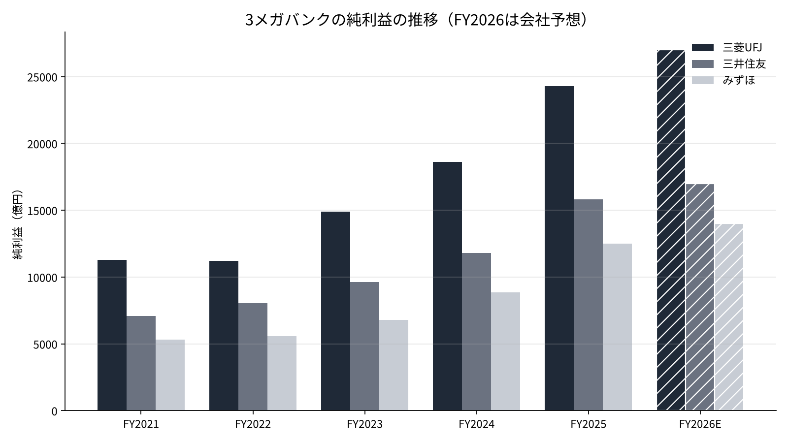
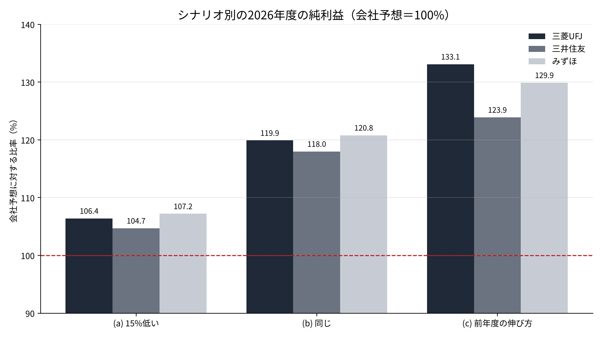

3メガバンクの通期純利益の予想は、11月13日の中間決算でどこまで固まるのか
三菱UFJフィナンシャル・グループ、三井住友フィナンシャルグループ、みずほフィナンシャルグループの3社は、11月13日に2026年度の中間決算を発表する[4]。4〜6月期の純利益は3社で1兆7,336億円となり、前の年の同じ期より4割以上増えた[2][3]。
一方で、11月6日の日経平均の急落を受けて、日銀の12月の利上げの見通しは5割台前半まで下がったと報じられている[10]。株式市場では、東証の銀行業の指数が先週だけで7.02%下げた[11]。
本稿の問いは、3社が掲げる2026年度の純利益の予想が、過去の決算の進み方から見てどこまで届きそうか、そして中間決算で何を確かめれば答えが固まるのかである。
- 3社の2026年度の純利益の予想（三菱UFJ2兆7,000億円・三井住友1兆7,000億円・みずほ1兆4,000億円）は、2025年度の実績に対して7〜12%の増益にとどまり、4〜6月期の進捗率は29.5〜30.2%だった。
- 7〜9月期以降の各四半期が4〜6月期より2割ほど減っても予想に届く計算で、最も弱いシナリオでも予想を5〜7%上回る。
- 中間決算で確かめるのは、進捗率が50%を超えるか、資金利益が4〜6月期の水準を保つか、与信関係費用が急に増えていないかの3点である。
問いと背景
3社の純利益は、この5年で大きく伸びた。2021年度（2022年3月期）から2025年度（2026年3月期）にかけて、三菱UFJは約1兆1,300億円から2兆4,272億円へ、三井住友は約7,066億円から1兆5,830億円へ、みずほは約5,305億円から1兆2,486億円へ増えている[5][6][7]。4年間の年率にすると、どの社も21〜24%の伸びになる。
伸びの中心は、資金利益である。資金利益とは、貸出や有価証券から受け取る利息から、預金などに払う利息を引いた額を指す。日銀は2024年3月にマイナス金利を解除し、その後の利上げで政策金利を2026年9月に約1.25%まで上げた[4]。
本稿で使うもう一つの言葉が、進捗率である。進捗率とは、ある時点までの純利益が、その年度の予想（会社が掲げる目標）に対して何%まで来たかを示す比率である。中間決算は、この進捗率が年の半分の時点で示される場になる。
2026年度の予想は、三菱UFJが2兆7,000億円、三井住友が1兆7,000億円、みずほが1兆4,000億円である[3]。みずほは4〜6月期の決算で、1兆3,000億円から予想を引き上げた[3]。
データと方法
使うのは、各社の決算短信と決算の説明資料にある純利益（親会社株主に帰属する当期純利益）である[1][5][6][7]。過去の年度の数字は、有価証券報告書のデータを集めたEDINETの集計から取った[7]。貸出の金利は、日銀の貸出約定平均金利を使う[8]。
方法は3つの段階に分けた。第一に、2025年度の決算の進み方を調べる。4〜6月期・中間期・通期の純利益を並べ、期初の予想に対して実際の結果がどれだけ上振れたかを見る。
第二に、2026年度の4〜6月期の純利益を、2025年度の進み方に当てはめる。2025年度の4〜6月期の純利益は、2026年度の数字と前年同期比の伸び率から逆算した。三菱UFJは約5,462億円、三井住友は約3,769億円、みずほは約2,905億円になる。
第三に、7〜9月期以降の稼ぎ方を3通りに置き、2026年度の通期の純利益を試算する。銀行の四半期の利益には季節性がある。年度の終わりの1〜3月期には、経費や引当金がまとまって計上されやすく、利益の伸びが鈍ることが多い。この点は(a)のように、後半の四半期を低めに置くことで確かめる。あわせて、予想にちょうど届くには7〜9月期以降の各四半期が4〜6月期の何%であればよいかを、逆算で求める。
結果
まず、2025年度の進み方である。3社とも、期初に掲げた予想を大きく上回って着地した。
| 社名 | 期初の予想 | 中間期の純利益 | 中間期の進捗率 | 通期の実績 | 期初比 |
|---|---|---|---|---|---|
| 三菱UFJ | 2兆円 | 1兆2,929億円 | 64.6% | 2兆4,272億円 | 121.4% |
| 三井住友 | 1兆3,000億円 | 9,335億円 | 71.8% | 1兆5,830億円 | 121.8% |
| みずほ | 1兆200億円 | 6,899億円 | 67.6% | 1兆2,486億円 | 122.4% |
三菱UFJは中間決算で予想を2兆1,000億円に、三井住友は1兆5,000億円に、みずほは1兆1,300億円に引き上げた[5][6][9]。それでも、3社とも引き上げた後の数字をさらに上回っている。中間期の進捗率が65〜72%に達した年は、通期で期初の予想を2割以上上回った。

次に、2026年度の4〜6月期の進捗率を見る。三菱UFJは8,094億円で予想の30.0%、三井住友は5,013億円で29.5%、みずほは4,229億円で30.2%だった[2][3]。単純に4倍すると、3社とも予想を2割近く上回る計算になる。3社を合わせると、4〜6月期の1兆7,336億円は、予想の合計5兆8,000億円の29.9%にあたる。2025年度の3社の実績の合計5兆2,588億円と比べると、予想の合計は10.3%多いだけである。
予想にちょうど届くための条件も求めた。7〜9月期以降の3つの四半期が、それぞれ4〜6月期の何%まで下がっても予想に届くかを逆算すると、三菱UFJは77.9%、三井住友は79.7%、みずほは77.0%になる。言い換えると、残りの四半期の純利益が4〜6月期より2割ほど減っても、予想には届く。
感度分析
7〜9月期以降の稼ぎ方を3通りに置いて、通期の純利益を試算した。(a)は7〜9月期以降の各四半期が4〜6月期より15%低い場合、(b)は4〜6月期と同じ場合、(c)は2025年度と同じ比率で年度の後半に伸びる場合である。(c)の倍率は、2025年度の通期の純利益を同じ年度の4〜6月期で割った値（三菱UFJ4.44倍、三井住友4.20倍、みずほ4.30倍）を使った。
| 社名 | (a)15%低い | (b)同じ | (c)前年度の伸び方 |
|---|---|---|---|
| 三菱UFJ | 2兆8,734億円（予想比106.4%） | 3兆2,376億円（119.9%） | 3兆5,937億円（133.1%） |
| 三井住友 | 1兆7,796億円（104.7%） | 2兆52億円（118.0%） | 2兆1,055億円（123.9%） |
| みずほ | 1兆5,013億円（107.2%） | 1兆6,916億円（120.8%） | 1兆8,185億円（129.9%） |
3通りのどれでも、予想は下回らない。最も弱い(a)でも、3社とも予想を5〜7%上回る。

中間決算の段階で見ると、4〜6月期と同じ稼ぎ方なら、中間期の純利益は三菱UFJで約1兆6,188億円、進捗率は60.0%になる。2025年度の中間期の進捗率64.6〜71.8%より低いのは、2026年度の予想そのものが前の年の実績に近い水準に置かれているからである。
考察
試算の数字は、予想に余裕があることを示している。2026年度の予想は、2025年度の実績に対して三菱UFJで11.2%、三井住友で7.4%、みずほで12.1%の増益にとどまる。4年間の年率21〜24%の伸びと比べると、控えめな置き方に見える。
ただし、反対の見方もある。第一に、4〜6月期の利益には、株式の売却益や一時的な利益が含まれている可能性がある。11月の株価の急落で、7〜9月期以降の有価証券の評価や売却の計画が変わることもありうる。
第二に、利上げの効果は、貸出の金利がどれだけ速く上がるかに左右される。日銀の統計では、国内銀行の貸出約定平均金利のうち、すでにある貸出（ストック）は2024年3月から2026年8月までに0.72%上がった[8]。新規の貸出は同じ期間に0.683%から1.782%へ上がっている[8]。12月の利上げが見送られれば、2026年度の後半の上積みは小さくなる。
第三に、貸倒れに備える費用（与信関係費用）の増加である。景気が冷えると、企業の返済が滞り、銀行は引当金を積み増す。米国の関税や中東の情勢など、海外の貸出には読み切れないリスクが残る。
データの限界も書いておく。三井住友の4〜6月期の前年同期比は「約33%増」と報じられた概数で、逆算した前年の数字には幅がある[3]。過去の年度の純利益の一部は、集計サイトの丸めた値を使っている[7]。答え合わせの基準は明確で、11月13日の中間期の純利益が予想の50%を超えるか、そして会社が予想を引き上げるかの2点になる。
銀行の株主にとっては、配当の見通しも大事な数字になる。2026年度の年間の配当予想は、三菱UFJが1株96円、三井住友が1対2の分割の後で90円である[4]。配当は純利益に一定の比率を掛けて決める方針の会社が多く、純利益が予想を上回れば、配当や自社株買いが上積みされる可能性がある。逆に純利益が予想を割れば、増配の幅は小さくなる。
結論
問いへの答えは、2026年度の予想は過去の進み方から見て届く可能性が高い、というものになる。7〜9月期以降の四半期が4〜6月期より2割ほど減っても、3社とも予想に届く計算になる。中間決算で確かめるべきは、中間期の進捗率が50%を超えるか、7〜9月期の資金利益が4〜6月期の水準を保っているか、そして与信関係費用が急に増えていないかの3点である。
僕はこう見ている
僕は銀行4行を持っている。三菱UFJが7,500株、りそなが1万3,500株、三井住友トラストと三井住友フィナンシャルグループが2万6,000株ずつで、国内株は総資産の48.14%にあたる。
株価が下げていても、配当は変わらない。僕が4行で見るのは配当と当期純利益の2つで、13日の決算でも、その2つが予想どおりかだけを確かめるつもりでいる。日銀は利下げをしないので、12月の利上げの見通しが下がっても、持ち方は変えない。決算の日に、売り買いをする予定はない。
出典
- 三菱UFJフィナンシャル・グループ, 「2026年3月期 第2四半期（中間期）決算短信」, 2025-11-14, https://www.mufg.jp/dam/ir/fs/2025/pdf/summary2509_ja.pdf
- Bloomberg, 「MUFGの純利益、4－6月期は前年比48%増8094億円」, 2026-08-03, https://www.bloomberg.com/jp/news/articles/2026-08-03/TJ6ETEKK3NY800
- ワンキャリア, 「メガバンク決算比較」, 2026, https://plus.onecareer.jp/articles/934
- media-ir, 「メガバンク決算の焦点」, 2026-11-08, https://www.media-ir.com/news/?p=187525
- 三菱UFJフィナンシャル・グループ, 「2025年度中間期 決算ハイライト」, 2025-11-14, https://www.mufg.jp/dam/ir/fs/2025/pdf/highlights2509_ja.pdf
- 三井住友フィナンシャルグループ, 「2025年度 中間決算 説明資料」, 2025-11, https://www.smfg.co.jp/investor/financial/disclosure/fy2025_inter_pdf/fy2025_inter_02.pdf
- EDINET DB, 「みずほフィナンシャルグループ・三井住友フィナンシャルグループ・三菱UFJフィナンシャル・グループ 業績推移」（有価証券報告書の集計）, 2026-11-09閲覧, https://edinetdb.jp/company/E03615/earnings/FY2025
- 日本銀行, 「貸出約定平均金利」, 2026, https://www.boj.or.jp/statistics/dl/loan/yaku/index.htm
- みずほフィナンシャルグループ, 「2026年3月期 第2四半期決算短信」（マネックス証券による掲載）, 2025-11-14, https://scouter.monex.co.jp/news/detail/8411_20251114_act_20251114_153045_4
- 日本経済新聞, 「株価急落で日銀の12月利上げに暗雲、市場予想は5割台前半」, 2026-11-06, https://www.nikkei.com/article/DGXZQOFL060BJTW6A101C2000000/
- マグニッキ, 「11/2〜6週の振り返り」, 2026-11-08, https://magnikki.com/market-review-2026w45/
写真：Kate Branch、Mohamed Jamil Latrach（Unsplash）。図はYUKI CAPITALが作成
日々の数字と判断は、Xで記録している。